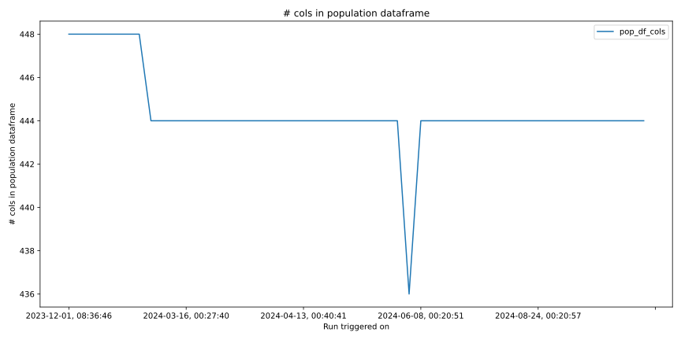
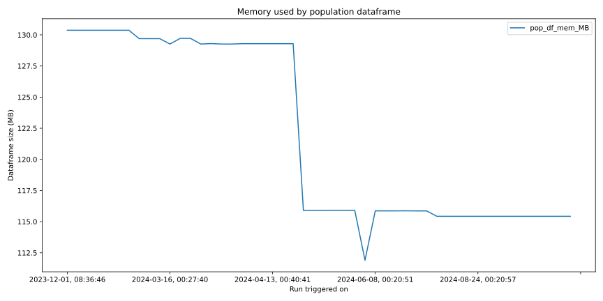
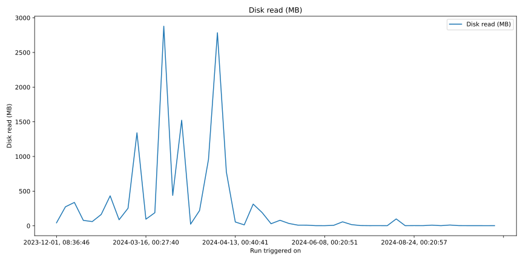
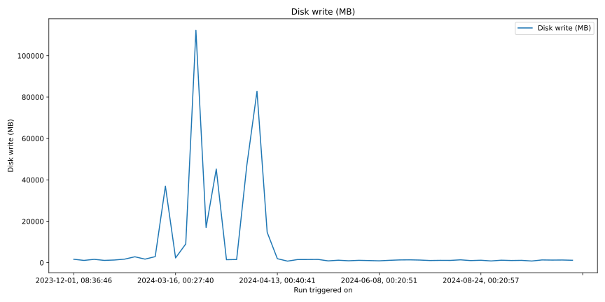
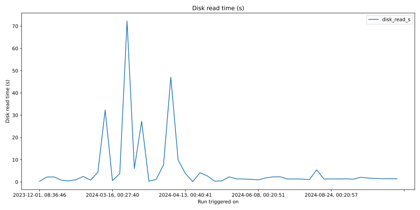

CPU Time¶

# rows in population dataframe¶

# cols in population dataframe¶
Memory used by population dataframe¶
# times population dataframe was extended¶

Disk read (MB)¶
Disk write (MB)¶
Disk read time (s)¶
Disk write time (s)¶